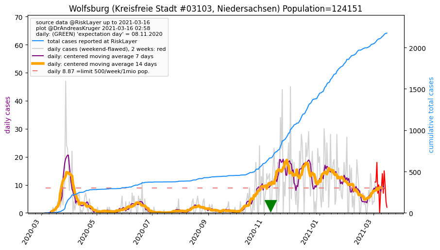
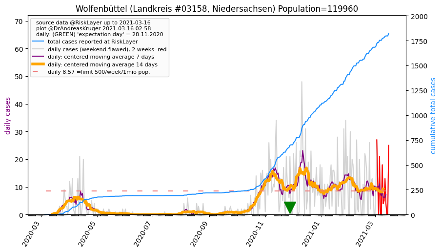
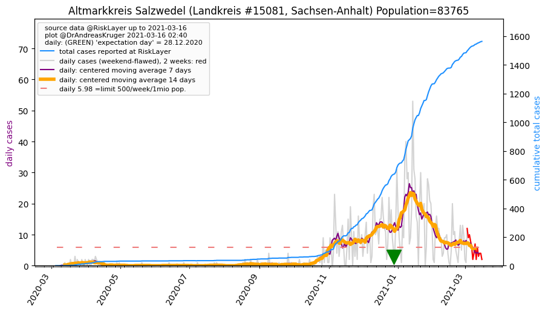
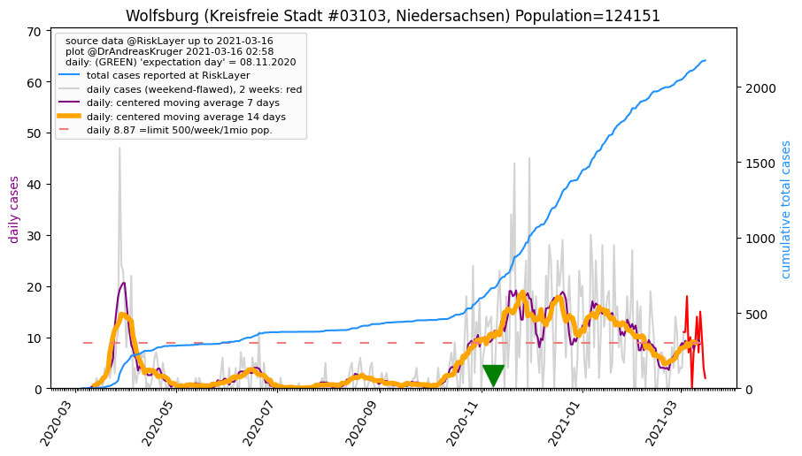
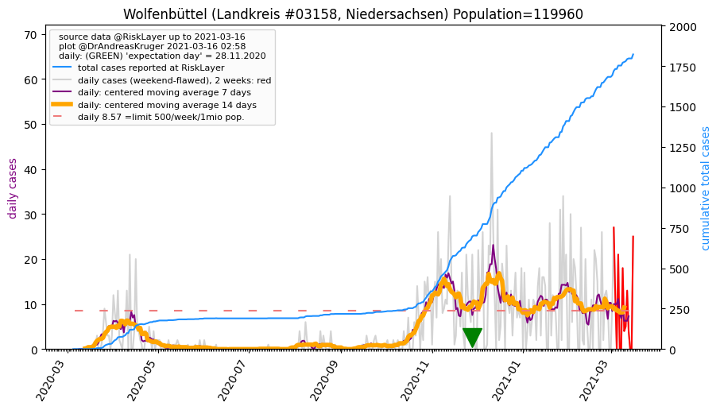
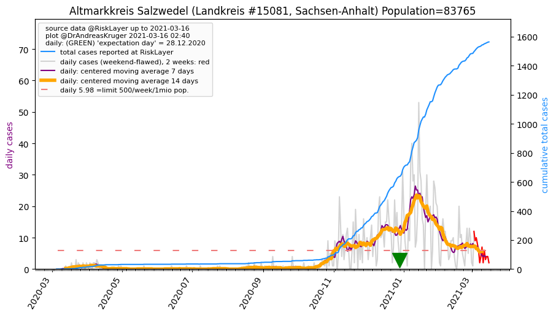

")
")
")

")

")
")
| Wolfsburg_KS (0.0 km)  |
Helmstedt_LK (18.1 km) |
Gifhorn_LK (22.5 km) |
| Braunschweig_KS (23.3 km) |
Wolfenbüttel_LK (34.4 km)  |
Peine_LK (38.0 km) |
| Altmarkkreis Salzwedel_LK (42.4 km)  |
Salzgitter_KS (42.6 km) |
Börde_LK (43.8 km) |
All plots are regenerated with new data every night. Beware this temporary hotspot is an experimental page - it might get removed, so please do not link to it. Instead link to project http://tiny.cc/cov19de.